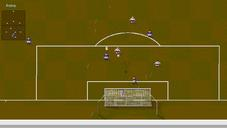
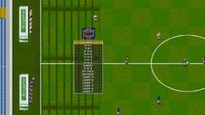

OSGL
All Games
Table
Filter
By category
By code language
By OS support
GitHub Stars Top 50
Playable browser games
Open code + artwork
For Kids
Engines/Tools
Developers
Inspirations
Statistics
Contribute
On GitHub
Games starting with Y
Yamagi Quake II
mature
active
action
remake
shooter
Homepage:
www.yamagi.org/quake2
Inspiration:
Quake II
Details
Code languages:
C
Code licenses:
GPL-2.0
Code repositories:
yquake2/yquake2.git
(since 2012,
)
Code dependencies: SDL
Build system:
CMake
Developers: (25)
A. J. Ricoveri
,
Alejandro Ricoveri
,
BjossiAlfreds
,
Boris I. Bendovsky
,
Bradley Clemetson
,
Christoph Mallon
,
Daniel Gibson
,
David CARLIER
,
David Reid
,
Denis Pauk
,
earth-metal
,
Elkan Roelen
,
Jarvik7
,
JoBergeron
,
Joshua Scoggins
,
Krzysztof Kondrak
,
Larry Davis
,
Mathyn
,
nia
,
Ricardo Garcia
,
Simon McVittie
,
Spirrwell
,
svdijk
,
VALGUSK
,
Yamagi
Improve
Raw entry
Yet Another Doom Clone
mature
active
action
content open
first-person
shooter
Homepage:
nicholas.carlini.com/writing/2019/javascript-doom-clone-13k.html
Inspiration:
Doom
Details
Code languages:
JavaScript
,
Python
Code licenses:
GPL-3.0
Code repositories:
carlini/js13k2019-yet-another-doom-clone.git
(since 2019,
)
Code dependencies: WebGL
Developer:
Nicholas Carlini
Improve
Raw entry
YKnytt
beta
active
platform
remake
content open
Homepage:
youkaicountry/yknytt
Inspiration:
Knytt Stories
Details
Code languages:
C#
Code licenses:
MIT
Code repositories:
youkaicountry/yknytt.git
(since 2020,
)
Code dependencies: Godot
Developers:
Nathaniel Caldwell
,
up-left
Improve
Raw entry
Yo Frankie!
mature
inactive since 2009
action
platform
Homepage:
apricot.blender.org
Media:
Yo Frankie!
Details
Code languages:
Blender Script
Code licenses: ?
Code dependencies: Blender game engine
Improve
Raw entry
YSoccer
mature
active
remake
simulation
sports
soccer
Homepages:
ysoccer.sourceforge.net
,
ysoccer
Inspiration:
Sensible Soccer
Downloads:
ysoccer.sourceforge.net/dloads.htm
,
ysoccer/files


Details
Code languages:
Java
Code licenses:
GPL-2.0
Code repositories:
git.code.sf.net/p/ysoccer/code
Build system:
Gradle
Developers:
Daniele
,
Massimo Modica
Improve
Raw entry
Back to top